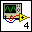
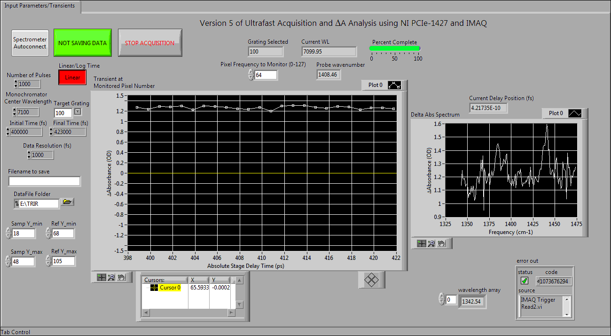
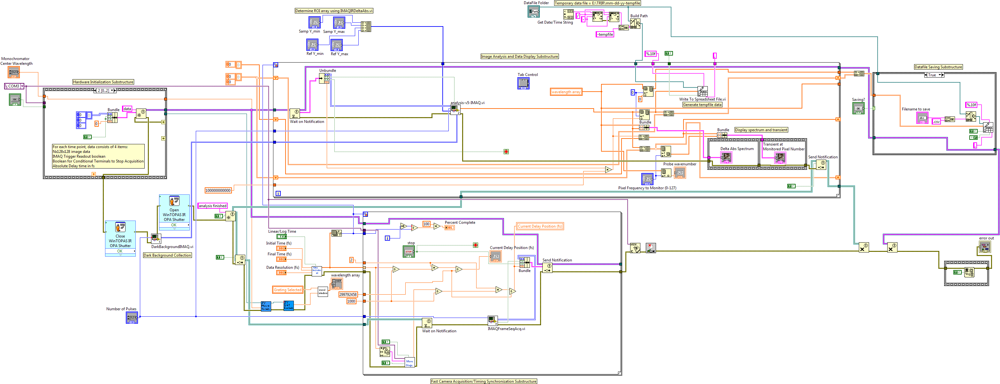
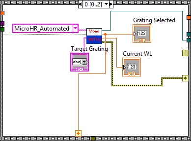
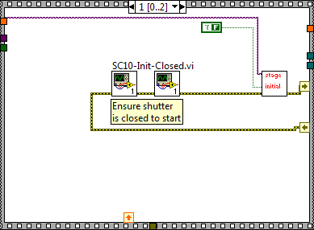
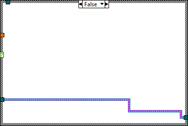

|
Close WinTOPAS IR OPA Shutter Prompt User for Input Displays a standard dialog box that prompts users to enter information, such as a user name and password. -------------------- This Express VI is configured as follows: Message to Display to the User:Close OPA 09613 Shutter in WinTOPAS for Dark Current Measurement and Click OK The inputs are: |
|
|
Open WinTOPAS IR OPA Shutter Prompt User for Input Displays a standard dialog box that prompts users to enter information, such as a user name and password. -------------------- This Express VI is configured as follows: Message to Display to the User:Open OPA 09613 Shutter in WinTOPAS to resume normal measurement The inputs are: |